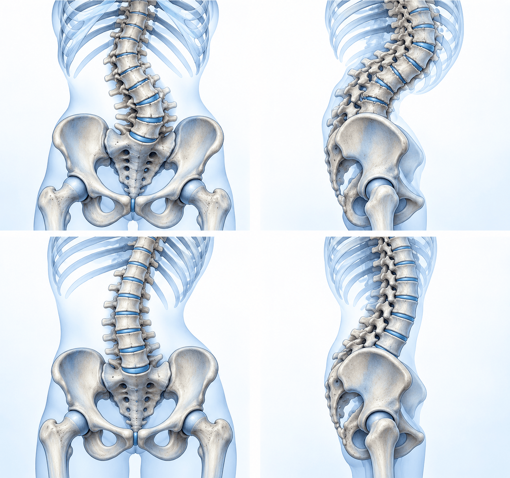
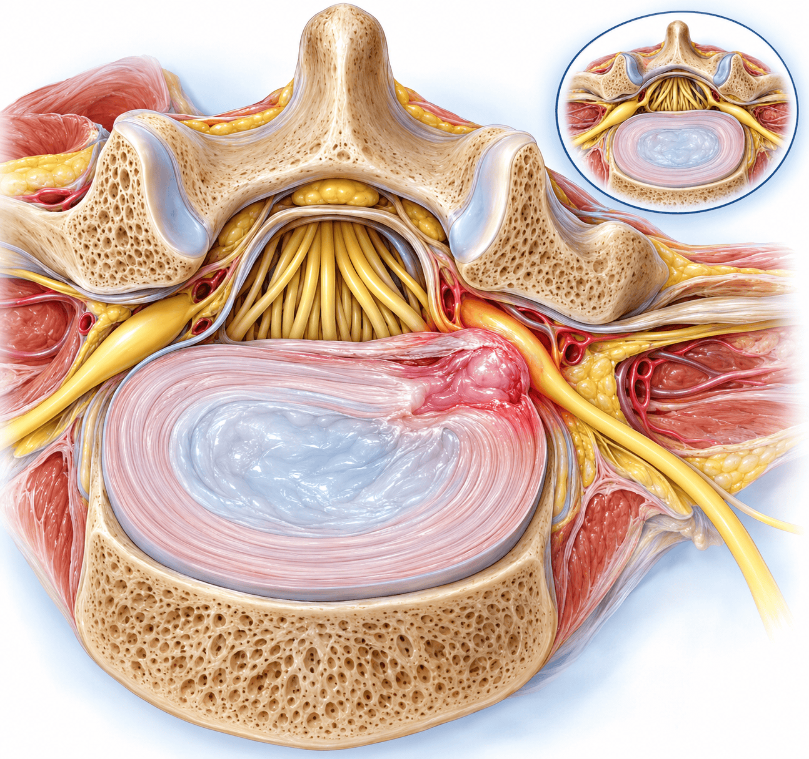
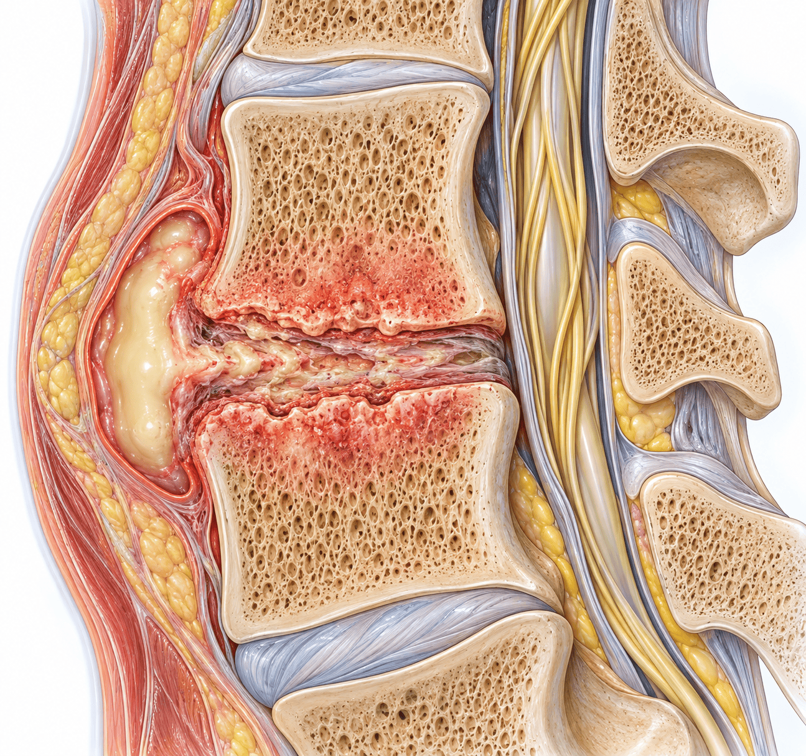

의료진 강의 학습
요통 영상검사
언제 찍고 무엇을 볼까
문진에서 기립·동적 X-ray, 병변별 추가 영상과 임상 판단까지
요통은 침해수용성 통증과 신경병성 통증이 혼재할 수 있다
| 통증 기전 | 임상 양상 | 해석의 초점 |
|---|---|---|
| 침해수용성 Nociceptive pain | 특정 자극에 반응 · 국소적으로 찌르거나 쑤시고 당기는 통증 | 자극이 사라지면 호전되는 양상 |
| 신경병성 Neuropathic pain | 말초·중추 신경계 병변 · 해당 신경 분절의 전기감·화끈거림·따끔거림·저림 | 요통에서 침해수용성 통증과 혼재 가능 |
| Nociplastic pain | 통증 수용의 변화 · 만성화 과정의 감작 | 수면·기분 장애를 함께 살피고 영상에만 의존하지 않는다 |
부위·정도·발생 시기·악화 및 완화 요인을 연결한다
MRI·CT를 시행했더라도 X-ray의 역할을 함께 생각한다
단순 방사선 검사는 기립 AP·lateral을 중심으로 본다
배열 변화는 통증의 위치와 가역성을 해석하는 단서다

퇴행성 전방전위증은 협착증을 동반할 수 있다
추간 간격 감소와 추간공 협착을 함께 해석한다
One-eyed vertebra · winking owl sign
관절염·추간판 질환·협착을 같은 소견으로 묶지 않는다
| 질환 | 영상·구조 | 임상 연결 |
|---|---|---|
| 후관절 관절염 | Facet joint 경화·비대 | 움직일 때 통증 · 쉬면 완화되는 양상 |
| 디스크 퇴행 | Disc space narrowing end plate sclerotic change | Bulging·annular tear도 퇴행 변화에 포함 |
| 추간판 탈출 | 영상 소견이 있어도 무증상인 경우가 많음 | 요통·하지 통증 · 감각 변화·근력저하 가능 |
| 척추관 협착 | 척추 변형·퇴행 변화와 동반 가능 | 협착 자체를 요통과 동일시하지 않고 하지 증상·파행과 연결 |
Herniated intervertebral disc는 침해수용성·신경병성 통증이 혼재한다

청장년기 발생·자세에 따른 통증·이학적 검사·X-ray를 묶는다
Pars interarticularis defect · 반복적인 신전·회전과 스트레스 골절
비전형적인 통증과 진행성 신경 증상이 추가 평가의 계기다
화농성 척추염 · 결핵성 척추염
조영증강 MRI에서 infectious spondylitis를 진단한 강의 증례

정확한 진단 뒤 증상·기능·신경학적 경과를 함께 판단한다
연자의 임상 답변 · 안정적인 경과와 악화 추세를 구분
QR로 강의 학습 자료를 다시 볼 수 있습니다